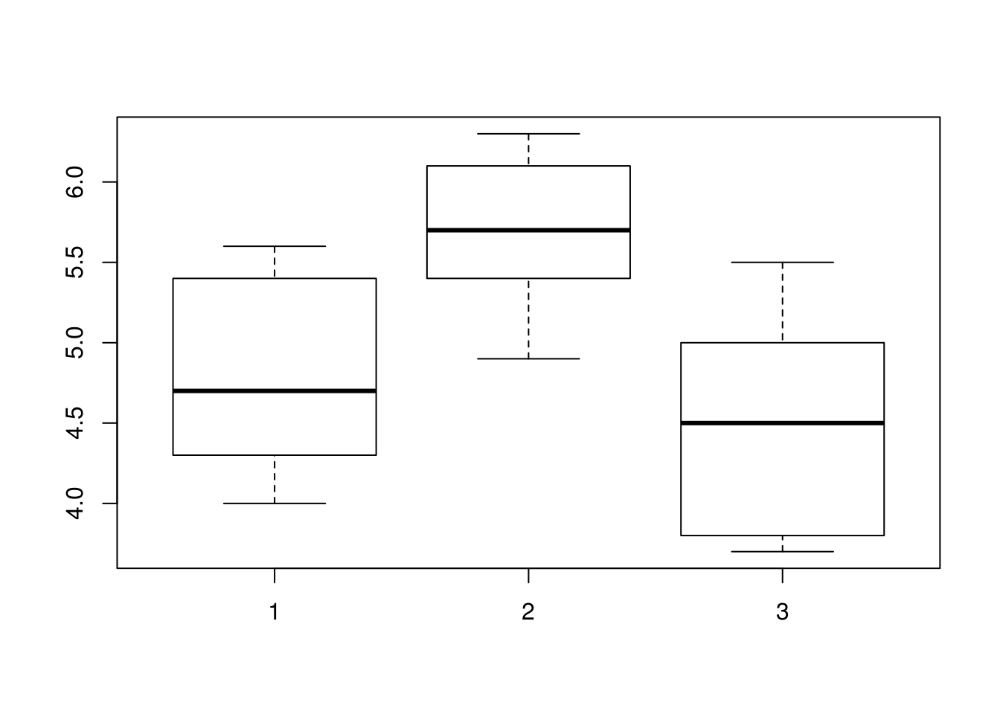
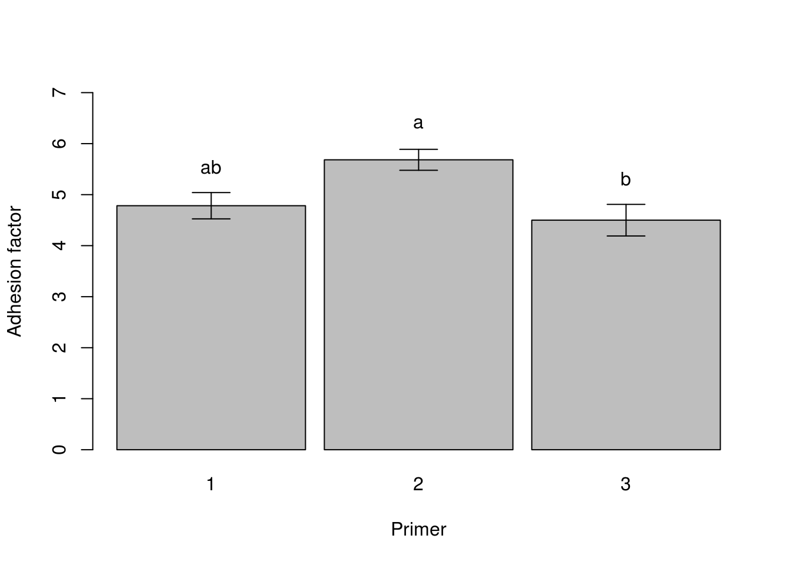
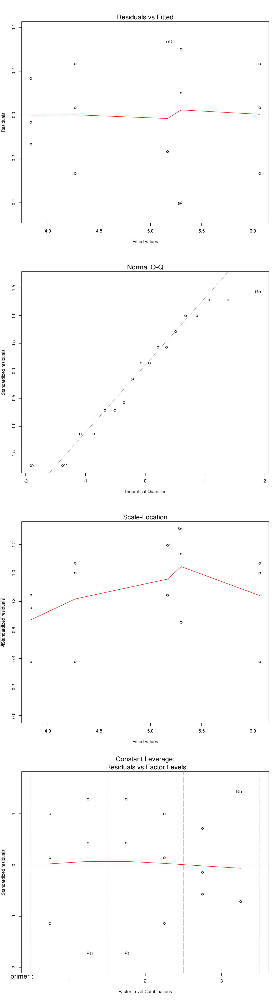
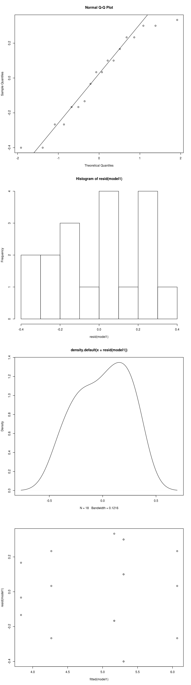
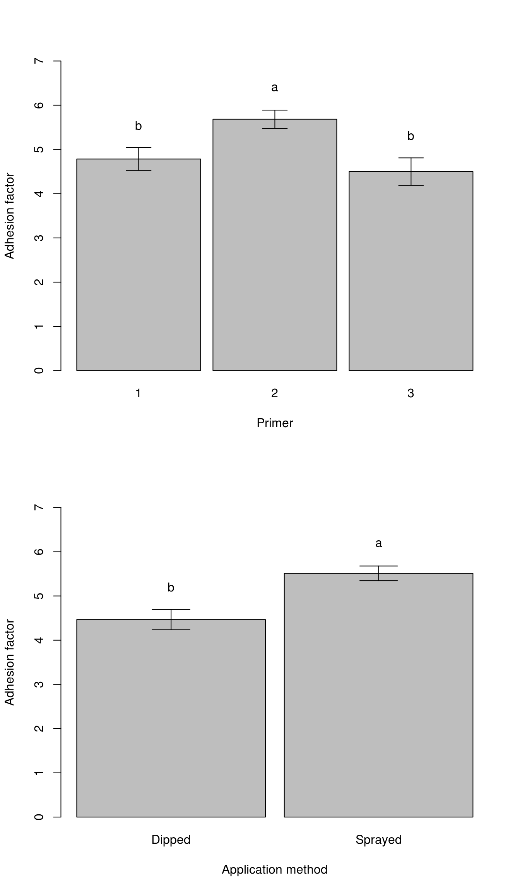

Chapter 12 ANOVA
12.1 One-way ANOVA
Analysis of variance is simple enough in R, using the aov() command. We will start with a simple One-Way ANOVA. We’ll use data on the effect of two paint application methods (applic) and three primers (primer) on the quality of paint adherence (adhf).
You will need to download this data from https://raw.githubusercontent.com/ivyleavedtoadflax/R_notes/master/paint.csv, and import the data into R using one of the methods we have discussed previously. Call the dataframe paint.
paint## adhf primer applic
## 1 4.0 1 Dipped
## 2 4.5 1 Dipped
## 3 4.3 1 Dipped
## 4 5.6 2 Dipped
## 5 4.9 2 Dipped
## 6 5.4 2 Dipped
## 7 3.8 3 Dipped
## 8 3.7 3 Dipped
## 9 4.0 3 Dipped
## 10 5.4 1 Sprayed
## 11 4.9 1 Sprayed
## 12 5.6 1 Sprayed
## 13 5.8 2 Sprayed
## 14 6.1 2 Sprayed
## 15 6.3 2 Sprayed
## 16 5.5 3 Sprayed
## 17 5.0 3 Sprayed
## 18 5.0 3 SprayedFirst we consider only the effect of primer - a one way ANOVA.
model <- aov(
adhf ~ primer,
data = paint
)We need to call the results of this analysis with summary.
summary(model)## Df Sum Sq Mean Sq F value Pr(>F)
## primer 1 0.241 0.2408 0.368 0.553
## Residuals 16 10.477 0.6548We get the usual ANOVA table that we would expect from this kind of analysis. Importantly, we see that the primer type does not appear to have a significant influence on the adherence of the paint (=0.55).
But wait! We didn’t specify that primer is meant to be a factor. Since it is numeric, R has no way of implicitly knowing this, so is currently treating primer as a continuous variable, which it definitely is not!
Let’s re-run the analysis correctly identifying primer as a categorical variable.
paint$primer <- factor(paint$primer)
str(paint)## 'data.frame': 18 obs. of 3 variables:
## $ adhf : num 4 4.5 4.3 5.6 4.9 5.4 3.8 3.7 4 5.4 ...
## $ primer: Factor w/ 3 levels "1","2","3": 1 1 1 2 2 2 3 3 3 1 ...
## $ applic: Factor w/ 2 levels "Dipped","Sprayed": 1 1 1 1 1 1 1 1 1 2 ...model <- aov(
adhf ~ primer,
data = paint
)
summary(model)## Df Sum Sq Mean Sq F value Pr(>F)
## primer 2 4.581 2.2906 5.599 0.0153 *
## Residuals 15 6.137 0.4091
## ---
## Signif. codes: 0 '***' 0.001 '**' 0.01 '*' 0.05 '.' 0.1 ' ' 1This time, we see that primer type does have a significant effect. Let’s plot the data:
boxplot(
split(
paint$adhf,
paint$primer
)
)
So it looks like primer 2 is the most effective, but we still don’t know if there are significant differences between primer 1 and 2, and 1 and 3, although we can guess there is a significant difference between 1 and 3.
We can use model.tables() to get a list of the effects:
model.tables(
x = model,
type="mean",
se = TRUE
)## Tables of means
## Grand mean
##
## 4.988889
##
## primer
## primer
## 1 2 3
## 4.783 5.683 4.500
##
## Standard errors for differences of means
## primer
## 0.3693
## replic. 6This gives us the treatment means, and the standard error of the differences. Note that a more versatile way of calculating data for groups is the melt and cast methods that we have used earlier.
12.1 Exercise
Get the median, mean, standard deviation, standard error, upper and lower 95% confidence intervals for the three primers in the paint data
se <- function(x) {
sd(x)/sqrt(length(x))
}
uci95 <- function(x) {
mean(x) + qt(0.975,df = length(x)-1) * sd(x) / sqrt(length(x))
}
lci95 <- function(x) {
mean(x) - qt(0.975,df = length(x)-1) * sd(x) / sqrt(length(x))
}12.1.1 Multiple comparisons
If we really want to know whether there are significant differences between the means, we need to do some sort of multiple comparison test. Be aware that there are dozens of possible multiple comparison tests, and there is some controversy about their use. In particular, you should be aware of controlling the family-wise error rate, which can be inflated in uncontrolled ‘least significant difference’ (LSD) tests. See http://en.wikipedia.org/wiki/Multiple_comparisons and http://en.wikipedia.org/wiki/Familywise_error_rate for more information. There is also a discussion of the problem on p.482 of the R book.
There are built in functions to do this analysis, but we will use the package agricolae which has greater functionality.
For this example we will use Tukey’s Honest Significant Difference test (HSD), which provides a reasonably conservative test.
library(agricolae)
# Note that here we have to specify the response (y) and the treatment (trt) of
# interest, in adittion to the mean residual mean squares and residual degree of
# freedom. These are taken from the summary(model) table.
#
#
HSD_primer <- HSD.test(
y = paint$adhf,
trt = paint$primer,
MSerror = 0.4091,
DFerror = 15,
alpha = 0.05
)
# Note that it is possible to automate the extraction of these values from the
# model object. And this is worth doing if you are running a lot of multiple
# comparison tests.
#
#
# Here is some code I have written to do just that. The if statements deal with
# the cases in which you have a nested experimental structure.
#
#
ms_w <- function(x) {
if ("Within" %in% names(x)) {
y <- summary(x$Within)[[1]][[3]]
tail(y,1)
} else {
y <- summary(x)[[1]][[3]]
tail(y,1)
}
}
df_w <- function(x) {
if ("Within" %in% names(x)) {
x$Within$df.residual
} else {
x$df.residual
}
}
#
# Check these against the output from the model:
#
ms_w(model)## [1] 0.4091111df_w(model)## [1] 15#
# And the test again with the automated functions
#
HSD_primer <- HSD.test(
y = paint$adhf,
trt = paint$primer,
MSerror = ms_w(model),
DFerror = df_w(model),
alpha = 0.05
)
HSD_primer## $statistics
## Mean CV MSerror HSD
## 4.988889 12.82085 0.4091111 0.9592031
##
## $parameters
## Df ntr StudentizedRange alpha test name.t
## 15 3 3.673378 0.05 Tukey paint$primer
##
## $means
## paint$adhf std r Min Max
## 1 4.783333 0.6306082 6 4.0 5.6
## 2 5.683333 0.5036533 6 4.9 6.3
## 3 4.500000 0.7589466 6 3.7 5.5
##
## $comparison
## NULL
##
## $groups
## trt means M
## 1 2 5.683333 a
## 2 1 4.783333 ab
## 3 3 4.500000 bAmongst all the output we get, is a table of groups:
HSD_primer$groups## trt means M
## 1 2 5.683333 a
## 2 1 4.783333 ab
## 3 3 4.500000 bHere, means with the same letter indicate no significant difference. Hence we see that primer 2 is significantly different from primer 3, but there is no difference between primer 1 and 2, or primer 2 and 3. Note that we used alpha = 0.05, but you can use a more stringent alpha if necessary.
We can display these differences using error bars and letters to signify significant differences in the plot below. The function se_lines() can quite easily be adapted to your own plots.
library(reshape)##
## Attaching package: 'reshape'## The following objects are masked from 'package:plyr':
##
## rename, round_anypaint_m <- melt(
paint,
id = 2:3
)
paint_c <- cast(
paint_m,
primer ~ variable,
c(mean,se,lci95,uci95)
)
paint_plot <- barplot(
paint_c$adhf_mean,
ylab = "Adhesion factor",
xlab = "Primer",
ylim = c(0,7),
space = 0.1,
names = paint_c$primer
)
#
#
#
# Specify function to take four arguments:
#
# x is the dataframe from which the summary data comes, in our case, a cast
# object. This object must contain a mean and se column
#
# y is the name of the plot - we need to give the plot an object name due to
# vagaries of the barplot function - by naming it as an object, we can place
# labels and error bars more precisely.
#
# Hline is the length of horizontal lines used in error bars. It is also used to
# specify the position of the significance letter. MCT is the name of the
#
# Multiple comparison test object output from agricolae - this will be an
# HSD.test or LSD.test object.
#
#
#
se_lines <- function(x,y,Hline,MCT) {
#
#
# Run a loop for the same number of times as we have levels of treatment
# factors
#
#
for (i in 1:length(x[,1])) {
#
#
# Find the mean and se columns using grep
#
#
x_mean <- x[,grep("mean",names(x))]
x_se <- x[,grep("se",names(x))]
#
#
# Create error bars
#
#
lines(
c(y[i],y[i]),
c(x_mean[i]+(x_se[i]),x_mean[i]-(x_se[i]))
)
lines(
c(y[i]-Hline,y[i]+Hline),
c(x_mean[i]+(x_se[i]),x_mean[i]+(x_se[i]))
)
lines(
c(y[i]-Hline,y[i]+Hline),
c(x_mean[i]-(x_se[i]),x_mean[i]-(x_se[i]))
)
#
#
# Add significance letters above the error bars.
#
# Get the correct order for the significance labels from the agricolae test
# object. This step is required, because the output from agricolae test
# objects are ordered by effect size, not by the initial order of factors
# specified in the input dataframe.
#
#
#
sig_labels <- sapply(x[,1], function(z) {
MCT$groups$M[grep(z,MCT$groups$trt)]
}
)
text(
y = x_mean[i] + x_se[i] + 5 * Hline,
x = y[i],
labels = sig_labels[i],
cex = 1
)
}
}
#
#
# Run the final code:
#
#
se_lines(
paint_c,
paint_plot,
0.1,
HSD_primer
)
12.2 Two-way ANOVA
OK so now we will include the effect of application method into our model, creating a Two-way ANOVA.
model1 <- aov(
formula = adhf ~ primer * applic,
data = paint
)Note that we used the formula adhf ~ primer * applic in order to look at all the interactions between the two factors. If we didn’t want to look at the interactions we would use + instead of * - but you need to have a good reason to do this.
summary(model1)## Df Sum Sq Mean Sq F value Pr(>F)
## primer 2 4.581 2.291 27.858 3.10e-05 ***
## applic 1 4.909 4.909 59.703 5.36e-06 ***
## primer:applic 2 0.241 0.121 1.466 0.269
## Residuals 12 0.987 0.082
## ---
## Signif. codes: 0 '***' 0.001 '**' 0.01 '*' 0.05 '.' 0.1 ' ' 1So it looks like the primer and applic factors both have a significant effect on adhf, but there is no significant interaction between the two. If you follow the model-simplification method, you might now want to remove this unimportant interaction, leaving you with just the significant interactions:
model2 <- update(model1,~.-primer:applic)
summary(model2)## Df Sum Sq Mean Sq F value Pr(>F)
## primer 2 4.581 2.291 26.12 1.88e-05 ***
## applic 1 4.909 4.909 55.98 2.96e-06 ***
## Residuals 14 1.228 0.088
## ---
## Signif. codes: 0 '***' 0.001 '**' 0.01 '*' 0.05 '.' 0.1 ' ' 1More on this can be found in Crawley. But for now, we will not remove the non-significant terms.
We must of course check for the assumptions of a linear model with ANOVA, as with regression. For brevity, we did not do this in the previous example - but you would need to in your analysis.
par(mfrow=c(4,1))
plot(model1)
par(mfrow=c(1,1))Additional diagnostic plots can be produced with:
par(mfrow=c(4,1))
qqnorm(resid(model1))
qqline(resid(model1))
hist(resid(model1))
plot(density(resid(model1)))
plot(fitted(model1),resid(model1))
par(mfrow=c(1,1))I think we can just about get away with that, although there is some suggestion of non-normality in the QQ plot. Transformation may improve that…
Now the multiple comparison test. Again we will use Tukey’s HSD test. We found no interactions between primer and application method. Note that we must re-run our test of primer, because the model has changed, and with it the residual mean squares and the degrees of freedom.
HSD_primer <- HSD.test(
y = paint$adhf,
trt = paint$primer,
MSerror = ms_w(model1),
DFerror = df_w(model1),
alpha = 0.05
)
HSD_primer## $statistics
## Mean CV MSerror HSD
## 4.988889 5.747656 0.08222222 0.4416697
##
## $parameters
## Df ntr StudentizedRange alpha test name.t
## 12 3 3.772929 0.05 Tukey paint$primer
##
## $means
## paint$adhf std r Min Max
## 1 4.783333 0.6306082 6 4.0 5.6
## 2 5.683333 0.5036533 6 4.9 6.3
## 3 4.500000 0.7589466 6 3.7 5.5
##
## $comparison
## NULL
##
## $groups
## trt means M
## 1 2 5.683333 a
## 2 1 4.783333 b
## 3 3 4.500000 bHSD_applic <- HSD.test(
y = paint$adhf,
trt = paint$applic,
MSerror = ms_w(model1),
DFerror = df_w(model1),
alpha = 0.05
)
HSD_applic## $statistics
## Mean CV MSerror HSD
## 4.988889 5.747656 0.08222222 0.2945156
##
## $parameters
## Df ntr StudentizedRange alpha test name.t
## 12 2 3.081307 0.05 Tukey paint$applic
##
## $means
## paint$adhf std r Min Max
## Dipped 4.466667 0.6928203 9 3.7 5.6
## Sprayed 5.511111 0.4960959 9 4.9 6.3
##
## $comparison
## NULL
##
## $groups
## trt means M
## 1 Sprayed 5.511111 a
## 2 Dipped 4.466667 bSo we find that things change for primer under the new model, and there are significant differences between primer 2 and primers 1 and 3:
HSD_primer$groups## trt means M
## 1 2 5.683333 a
## 2 1 4.783333 b
## 3 3 4.500000 bFor application method, we see that spray application is more effective than dipping.
HSD_applic$groups## trt means M
## 1 Sprayed 5.511111 a
## 2 Dipped 4.466667 bLet’s plot these together
par(mfrow=c(2,1))
paint_plot <- barplot(
paint_c$adhf_mean,
ylab = "Adhesion factor",
xlab = "Primer",
ylim = c(0,7),
space = 0.1,
names = paint_c$primer
)
se_lines(
paint_c,
paint_plot,
0.1,
HSD_primer
)
paint_c2 <- cast(
paint_m,
applic ~ variable,
c(mean,se)
)
paint_plot <- barplot(
paint_c2$adhf_mean,
ylab = "Adhesion factor",
xlab = "Application method",
ylim = c(0,7),
space = 0.1,
names = paint_c2$applic
)
se_lines(
paint_c2,
paint_plot,
0.1,
HSD_applic
)
par(mfrow=c(1,1))